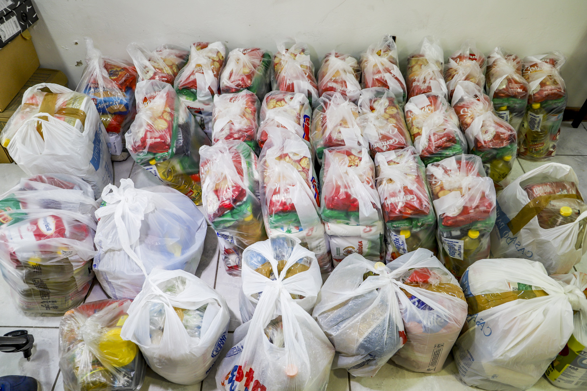

Transformando vidas através de projetos sociais
Nossa missão é promover educação e bem-estar em comunidades locais. Conheça nossos projetos e participe.
Missão, visão e valores
Missão: promover inclusão social por meio de educação, saúde e geração de renda.
Visão: ser referência local em impacto social até 2030.
Valores: transparência, respeito e parceria.
Nossos impactos
- 1200+Beneficiados
- 35Projetos concluídos
- 480Voluntários
Destaque de projeto
Um dos nossos principais projetos de educação infantil está transformando o futuro de mais de 200 crianças na comunidade Vila Nova.
Contato
Rua Hildo Novaes, 640 — Vila Nova — Joinville - SC
Telefone: (47) 99269-9995
Email: mateus.branquis@cs.up.edu.br